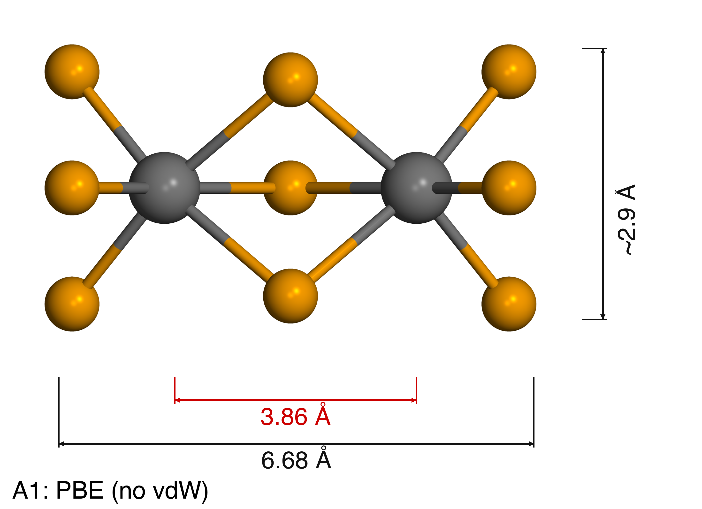
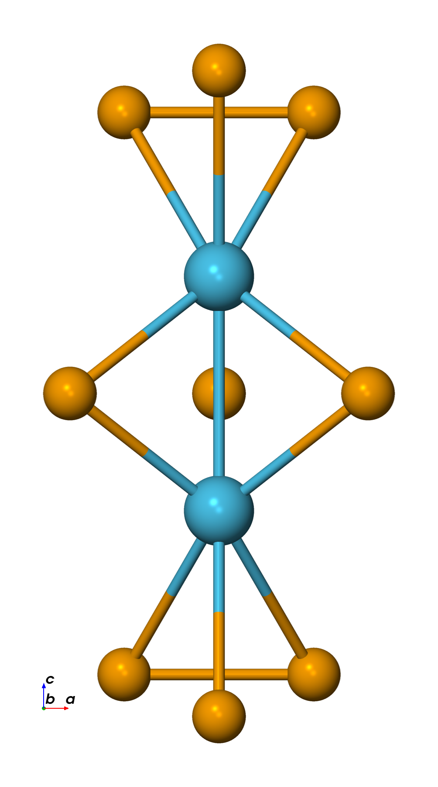

Hf₂Se₉ relaxation stability: functional & vdW scan
Goal
Find a DFT setting under which Hf₂Se₉ molecule relaxation converges stably and reproduces the experimental structure. Prior calculations repeatedly failed (cell expansion 16–53%, structure collapse). Four axes are examined independently to isolate the cause: exchange–correlation functional, basis set, DFT+U, and CNT confinement. The test system is the Hf₂Se₉ molecule (11 atoms, 25 Å cubic cell, Γ-only) — the lightest case, used to scan settings quickly.
Pass/fail criteria (TEM reference Hf–Hf = 3.6 Å)
| Criterion | Success | Failure |
|---|---|---|
| Hf–Hf distance | 3.5–3.8 Å held | < 3.0 Å (collapse) or > 5.0 Å (decomposition) |
| Force convergence | < 0.01 eV/Å | not converged (> 1000 steps) |
| Structure | confacial bioctahedron held | Se₃ triangle distorted, Hf escapes |
| Experimental agreement | Hf–Hf deviation < 5% | deviation > 10% |
Method — Phase A: exchange-correlation + vdW scan
Fixed: basis EnergyShift 0.01 Ry (136 meV), U = 0, no CNT. Variable: functional + vdW method.
| # | Functional | vdW | Code | Purpose |
|---|---|---|---|---|
| A1 | PBE | none | SIESTA | baseline — does structure hold without vdW? |
| A2 | PBE + Grimme D2 | fdf2grimme | SIESTA | reproduce previous setup |
| A3 | vdW-DF2 (LMKLL) | built-in | SIESTA | revPBE exchange, non-local correlation |
| A4 | PBE + D3(BJ) | DFT-D3 | SIESTA | coordination-number-dependent C₆ |
| A5 | PBE + D3(BJ) | IVDW=12 | VASP | plane-wave reference — isolate NAO-basis issue |
| A6 | HSE06 + D3(BJ) | IVDW=12 | VASP | hybrid functional — exchange accuracy |
Result
Phase A — Hf–Hf distances
| Test | Functional | Basis | Code | Hf–Hf (Å) | Δ(3.6 Å) | Converged | Note |
|---|---|---|---|---|---|---|---|
| A1 | PBE | 136 meV | SIESTA | 3.857 | +7% | ✅ 14 steps | holds even without vdW |
| A2 | PBE+D2 | 136 meV | SIESTA | — | — | ❌ | SCF not converged (3 failures, cause not identified) |
| A3 | vdW-DF2 | 136 meV | SIESTA | 3.967 | +10% | ✅ 13 steps | revPBE exchange |
| A4 | PBE+D3(BJ) | 136 meV | SIESTA | 3.857 | +7% | ✅ 14 steps | = A1 (D3 has no effect on an isolated molecule) |
| A5 | PBE+D3 | PAW | VASP | 2.934 | −18.5% | ✅ | plane-wave reference |
| A6 | HSE06+D3 | PAW | VASP | 3.330 | −7.5% | ✅ | closest overall |
Within SIESTA, PBE and PBE+D3(BJ) (3.857 Å) are closest to experiment; vdW-DF2 over-expands further (3.967 Å). VASP HSE06+D3 (3.330 Å) is closest of all, but the SIESTA↔VASP discrepancy is large. A2 (PBE+D2) repeatedly fails SCF convergence — cause not yet isolated.




Molecule vs chain (vdW-DF2)
| Molecule (05) | Chain (06) | |
|---|---|---|
| Initial Hf–Hf | 3.62 Å | 3.62 Å |
| Relaxed Hf–Hf | 3.967 Å (+10%) | 4.164 Å (+15.7%) |
| vdW gap (chain) | — | 5.89 Å (+68%) |
| Force | 0.027 eV/Å (≈ converged) | 0.39 eV/Å (unstable) |
Both over-expand relative to experiment (3.6 Å); the chain is worse because periodic vdW interactions accumulate and revPBE's extra repulsion accelerates the expansion. A separate PBE+D2 chain run reached 197 steps before OOM (Hf–Hf = 4.47 Å, max force = 0.094 eV/Å, not converged).


Why prior relaxations failed (archive analysis)
Six standalone Hf₂Se₉-chain relaxation attempts in the archive:
| Attempt | Condition | Result |
|---|---|---|
| 001_rlx | neutral, D2, EnergyShift 10 meV | c-axis +16% expansion |
| 002_totcharge-2 | charge −2 | still expanding |
| 003_originstruct | 1-unit (11 atoms) | c-axis −22% contraction (opposite direction) |
| 005_basis50 | EnergyShift 50 meV | nearly unchanged (convergence unclear) |
| 006_basis50_tot-2 | 50 meV + charge −2 | c-axis +53% → chain decomposes |
Identified root causes:
- Grimme D2 Hf C₆ inaccuracy. C₆ sets the vdW attraction strength ($E_\mathrm{disp} = -C_6/R^6$). D2 uses a fixed free-atom value; free Hf has C₆ = 1089.41 eV·Å⁶, but inside Hf₂Se₉ the Hf is surrounded by 6 Se, so its real C₆ should be much smaller. D2 ignores this environment dependence. D3(BJ) interpolates C₆ from the coordination number, fixing it; vdW-DF2 avoids empirical parameters entirely (vdW energy from the electron density).
- Basis-set sensitivity (BSSE). Large basis (10 meV) → 16% expansion; small basis (50 meV) → nearly unchanged. The vdW-gap energy (~tens of meV) is within the BSSE error.
- MD.VariableCell = T. Allowing c-axis relaxation lets the flat PES collapse or expand the vdW gap under tiny forces.
- Starting-structure dependence. The 2-unit-cell start expands; the 1-unit-cell bulk-extracted start contracts — opposite directions for the same system.
- Heterostructure "false convergence." In the 3uc heterojunction, 1-step convergence is a VSe₃ cage effect (kinetic trapping), not a true minimum. By contrast VASP MD with DFT-D3 held Hf–Hf = 3.82 Å.
vdW-correction comparison: D2 vs D3(BJ) vs vdW-DF2
Grimme D2 (Grimme 2006) adds dispersion on top of PBE:
$$E_\mathrm{disp} = -s_6 \sum_{iwhere the non-local correlation $E_c^{\mathrm{nl}}$ is computed directly from the electron density $n(\mathbf{r})$ with kernel $\Phi$, and uses revPBE exchange (more repulsive than PBE). Symbols: $C_6^{ij}$ = pairwise dispersion coefficient, $r_{ij}$ = interatomic distance, $f_\mathrm{damp}$ = short-range damping, $s_6$ = global scaling.
| Feature | D2 | D3(BJ) | vdW-DF2 |
|---|---|---|---|
| C₆ determination | fixed (1 per element) | CN-dependent interpolation | direct from density |
| Environment adaptivity | none | via CN | fully self-consistent |
| Exchange functional | PBE | PBE | revPBE |
| damping | zero (discontinuous) | BJ (smooth) | not needed (seamless) |
| SIESTA support | built-in (grimme.fdf) | conditional (libdftd3; not in 5.2.x) | built-in (XC.functional VDW) |
| Reliability for Hf₂Se₉ | low (failures observed) | high (VASP-validated) | high (theoretical) |
Comparison methodology (how "better" is judged)
Total energy cannot be compared across functionals — each approximates $E_{xc}$ differently and uses a different energy reference (e.g. vdW-DF2 uses revPBE, D2 uses PBE). The valid comparisons are: (1) relaxed structure parameters vs experiment (most important — Hf–Hf vs TEM 3.6 Å); (2) relative energies within the same functional (e.g. the 41 meV/atom TP–TAP split in vdW-DF2); (3) binding/cohesive energy within a functional; and (4) convergence and structural stability.
Phase C — CNT confinement (plan)
Experimentally Hf₂Se₉ is synthesized/observed inside a CNT. The Phase C question is whether the CNT actually stabilizes the geometry toward the experimental Hf–Hf, or merely traps a metastable geometry by preventing motion. The first run is planned as "CNT atoms fixed, Hf₂Se₉ relaxed only", following the JACS 2021 NbTe₃/VTe₃/TiTe₃@CNT protocol (10.1021/jacs.0c10175). A diameter scan over CNT chiralities (≈ 12 Å inner diameter needed; (9,9) and (16,0) as starting candidates) precedes relaxation and MD. Status: structure scaffolds only; a (9,9)+Hf₂Se₉ assembly was generated.

Discussion / next steps
- Confirm optimal XC + EnergyShift (Phase A/B), then DFT+U scan (Phase D), then CNT (Phase C).
- Resolve A2 (PBE+D2) SCF failure; obtain QE A7 to separate code dependence.
- Validate the chosen functional on the chain, since D3 has no effect on an isolated molecule.